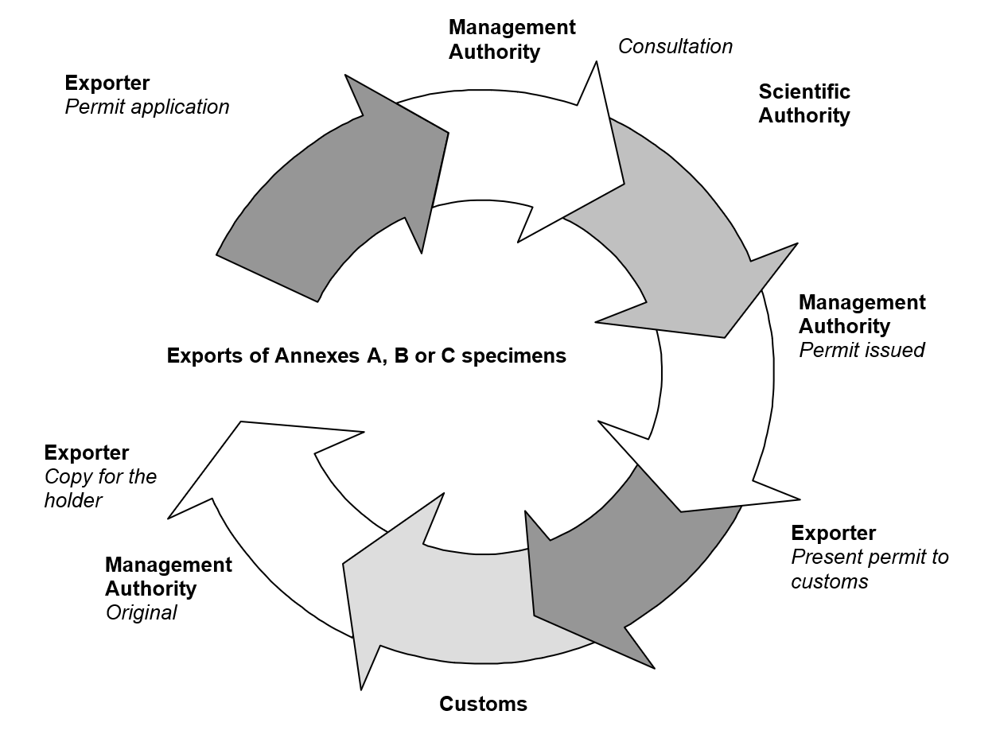
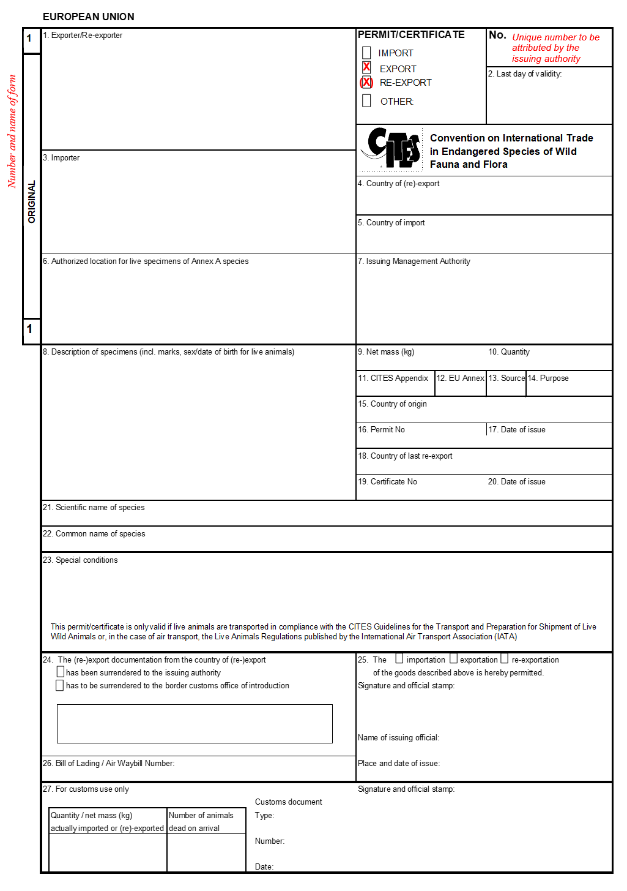

An export permit is required for specimens taken from the wild, bred in captivity or artificially propagated in the EU1.
A re-export certificate is required for specimens of species that were previously imported into the EU2.
No documents are however required if the specimens originate from a population that is not included in Appendix III and Annex C (for those species where only a national population of a species is included in CITES).
The export permit or the re-export certificate must be issued by the Management Authority of the Member State in which the specimens are located, and presented by the carrier at the Customs office at which the export formalities (including endorsement) are completed (i.e., where the shipment leaves the EU - not necessarily at the border nor necessarily in the same Member State).
3.5.1 How do I apply to export or re-export a specimen?
(See also Figure 6.)
The (re-)exporter must apply with an export permit/(re-)export form (the model is set out in Annex I to Regulation (EU) No 792/2012) to the Management Authority of the Member State in which the specimens are located.
Management Authorities are required to issue an export permit or a re-export certificate within the same timeframe as for the issuance of an import permit (see Section 3.3.1), namely one month from the date of submission of a full application3.
However, this may take longer where third parties need to be consulted. Where a Management Authority of another Member State is consulted by one of its counterparts, it must respond within one week4.
Applications for export permits or re-export certificates must therefore be made in a timely manner, in order for the document to be issued prior to the (re-)export of shipments from the EU5.
The applicant must be informed of significant delays3.
Figure 6: Steps required for obtaining an export permit or re-export certificate for specimens of species listed in Annex A, B or C of the EU Wildlife Trade Regulations

The procedures described in this Section are similar to the ones related to imports (see Section 3.3.1 and Figure 1) and internal trade within the EU (see Section 5.5).
Presentation of the necessary documentation is required before specimens can be cleared by Customs6. Specimens may be seized and subsequently confiscated in the absence of such documents.
Depending on the system applied in the relevant EU Member State, and as is the case for imports, the applicant either receives a full set of forms (the application form, the original and all three copies), or just the application form7.
If only the application form is to be completed, the applicant must fill in boxes 1, 3 to 5 and 8 to 23 in typescript or legibly in manuscript (ink and block capitals)8. Erasures and alterations are to be avoided9. Although each shipment of specimens requires a separate (re-)export document, the application form may relate to more than one shipment7. Where a shipment contains more than one species, the applicant must obtain and complete additional annex forms that are needed to complete the annexes that will be attached to the permit or certificate10.
If the full set of forms is to be completed, the applicant must fill in boxes 1, 3 to 5 and 8 to 23 of the application form and boxes 1, 3 to 5 and 8 to 22 of the original and all copies. The forms must be completed in typescript and not in manuscript8. The original and copies may not normally contain erasures and alterations. Where this is the case, they must be authenticated by the stamp and signature of the issuing Management Authority9.
A separate set of forms must be completed for each shipment of specimens shipped together as part of one load.
Instructions for completing the forms are contained on the back of the application form, the original and all copies (see also the export permit/re-export certificate form, Figure 7).
The annex attached to a permit and the number of pages must be clearly indicated on the permit. Each annexed page must include the number of the permit and the signature, and stamp or seal of the issuing authority11. Annexes may also contain lists of numbers of identification marks (rings, tags and the like) for which there is no prescribed form for the annex.
The completed form(s) must be submitted to the Management Authority of the Member State in which the specimens are located, together with the documentary evidence necessary to allow the Management Authority to determine whether a permit/certificate should be issued (see also Table 11 on exports, and Table 12 on re-exports)12.
Member States may charge a fee for processing the application.
Upon (re-)export of the shipment, the (re-)exporter (or their authorised representative) must present the original export permit or re-export certificate (form 1), the copy for the holder (form 2) and the copy for return to the issuing authority (form 3) to Customs for clearance13. The Customs office will complete box 27 on the different forms. The original export permit or re-export certificate and the “copy for the holder” will be returned to the (re-)exporter14. The “copy for return to the issuing management authority” will be forwarded to the relevant Management Authority of the Member State15.
3.5.2 What documentary evidence is required by the Management Authority for (re-)exports?
In order for an export permit to be issued, the applicant must provide documentary evidence that the specimens were obtained in accordance with legislation on the protection of the relevant species in the Member State in question. Where the specimen to be exported originates in another Member State (than the Member State of export), a certificate (for specimens of species listed in Annex A) or other documentation (for specimens of species listed in Annex B) is required to prove legal acquisition (see Section 5.5)16.
For the re-export of specimens, documentary evidence of legal introduction into the EU is required for a re-export certificate to be issued. Where the specimen was imported into another Member State (than the Member State of re-export), a “copy for the holder” of the relevant import permit, or a certificate (for specimens of species listed in Annex A) or other documentation (for specimens of species listed in Annex B) must be available to prove the legal introduction into the EU17. These documents are the most appropriate for this purpose, also containing the necessary information on country of origin, country of re-export, relevant document numbers and dates thereof, all of which are to be included in the application for (re-)export.
Figure 7: Annotated export permit/re-export certificate

Summary of key instructions and explanations for (re-)export permit/certificate forms
(Note: For full instructions and explanations, see Annex I to Regulation (EC) No 792/2012. The numbers below refer to the numbers of the boxes on the form - see Figure 7)
Exporter/re-exporter: Must contain the full name and address of the actual exporter or re-exporter, and not of an agent.
Last day of validity: No later than 6 months from date of issue.
Importer: Must contain the full name and address of the actual importer, and not of an agent.
Member State from which the goods are to be (re-)exported: The country of export can only be the country of origin of the specimens, i.e. where they were taken from the wild, bred or propagated (see 15).
The country of final destination of the specimens.
Authorised location for live specimens of Annex A-listed species: Not applicable for export and re-export.
Issuing Management Authority: The Management Authority of the Member State in which the specimens are located.
Description of specimens: This description must be as precise as possible and include a 3-letter code in accordance with Annex VII to Regulation (EC) No 865/2006.
Net mass: See Annex VII to Regulation (EC) No 865/2006 for units to be used.
Quantity: See Annex VII to Regulation (EC) No 865/2006 for units to be used.
CITES Appendix: I, II or III.
EU Annex: A, B or C.
Source of specimens: Use codes in Annex IX of Regulation (EC) No 865/2006 (as amended).
Purpose of import: Use codes in Annex IX of Regulation (EC) No 865/2006 (as amended).
Country of origin: Country where specimens were taken from the wild, born and bred in captivity or propagated (see 4). In the case of plant specimens that were formerly exempt from CITES controls (e.g. seeds or artificially-propagated flasked seedlings from species listed in Appendix II), but that ceased to be exempt (e.g. because they were grown further), the country of origin is that country where the exemption ceased to apply.
Permit no.: Not to be completed if country of origin is a Member State.
Date of issue: Not to be completed if country of origin is a Member State.
Country of last re-export: In the case of re-export from the EU, the country of last re-export is the third country from which the specimens were imported before being re-exported from the EU (boxes 19 and 20 to contain details of relevant re-export certificate).
Certificate no.: Provide the number of the relevant re-export certificate.
Date of issue: Provide the date of the relevant re-export certificate.
Scientific name of species: The standard references for nomenclature in Annex VIII to Regulation (EC) No 865/2006 must be used. These are also available on the UNEP-WCMC website.
Common name of species: A common name may not be available for all species.
Special conditions: (for official use only) Space for the issuing authority to impose stipulations, conditions and requirements in order to ensure compliance with EU and national legislation.
Surrender of (re-)export documentation: (for official use only) Not applicable for export and re-export.
This is the actual validation of the import permit (for official use only).
Bill of Lading/Air Waybill no.: To be indicated by the exporter at the time of export.
Quantity/net mass (kg) actually exported or re-exported: If more than in box 9 or 10, Customs will contact the Management Authority.
Number of animals dead on arrival: Not applicable for export and re-export.
After completion, Customs will return the copy for return by Customs to the issuing authority (form 3) to the Management Authority in their country, and return the original (form 1) and the “copy for the holder” (form 2) to the (re-)exporter.
3.5.3 What other requirements apply for (re-)export under the EU Wildlife Trade Regulations?
In general, specimens of species listed in Annex A cannot be (re-)exported for primarily commercial purposes18 (except for relevant derogations as set out in Section 4).
Exports of specimens of species listed in Annexes A, B and C are never allowed if such an export would have a detrimental conservation effect19 - this is explained in more detail in Section 3.3.3.
Certain specimens need to be marked before (re-)export20 in accordance with Article 66(6) of Regulation (EC) No 865/2006 (see Section 7).
As in the case of imports (see Sections 3.3.3 and 3.4), the transport of live specimens must be in accordance with Article 9(5) of Regulation (EC) No 338/97, which states that: “When any live specimens are transported into, from or within the Community or are held during any period of transit or transhipment, they shall be prepared, moved and cared for in a manner such as to minimise the risk of injury, damage to health or cruel treatment and, in the case of animals, must be in conformity with Community legislation on the protection of animals during transport (see Section 6.1).”
The transport of all live animals from, into and within the EU is governed by Council Regulation (EC) No 1/2005 of 22 December 2004 on the protection of animals during transport and related operations. However, this does not apply to transport within the EU of animals for distances of less than 50 kilometres nor to the movement of personal pets.
CITES Resolution Conf. 10.21 (Rev. CoP19) on the Transport of Live Specimens recommends that the IATA Live Animals Regulations (for animals), the IATA Perishable Cargo Regulations (for plants) and the CITES guidelines for the non-air transport of live wild animals and plants be deemed to meet CITES transport requirements and should be followed by all CITES Parties as well as (relevant sections) incorporated into national legislation or policies (see Section 6 for further information). Regulation (EC) No 1/2005 provides that animals transported by air must be transported in containers, pens or stalls appropriate for the species, which comply with the IATA Live Animals Regulations21.
The omission of information from the application must be justified12.
3.5.4 What happens when (re-)export applications are rejected?
(See also Section 3.3.4 for similar information on import applications.)
Applicants must be informed of the rejection of an application, and the reasons for which it was rejected.
Member States are obliged to reject applications for export permits for caviar and meat of sturgeon and paddlefish species (Acipenseriformes spp.) with source code “W” from shared stocks, unless export quotas have been established for the species in question in accordance with the procedure laid down by the Conference of the Parties22. Details of current quotas may be found on the Secretariat’s website at https://www.cites.org/eng/resources/quotas/index.php.
Applicants must inform a Management Authority of previously rejected applications for permits relating to specimens23. The application form contains a pre-printed declaration by the applicant indicating that the application has not been previously rejected. This is also valid if a Management Authority of another EU Member State rejected the application.
3.5.5 Are there any other requirements than can apply?
(See Section 3.3.5 for similar information on imports.)
Where a permit/certificate is issued, it may contain stipulations, conditions and requirements imposed by the issuing authority, in order to ensure compliance with the EU Regulations and national legislation on their implementation24. The use of the document issued is subject to other necessary formalities relating to the (re-)export of goods from the EU or to the documents issued for such formalities (tariffs health, etc.)25.
3.5.6 How long do (re-)export documents remain valid?
The maximum time validity of an export permit or re-export certificate is six months (see Section 8.2).
However, in the case of caviar of sturgeon and paddlefish species (Acipenseriformes spp.) with source code “W” that originated from shared stocks which are subject to export quotas, there is an additional stipulation that the export permit ceases to be valid on the last day of the year to which the quota applies (i.e. the quota year in which the caviar was harvested and processed) – if this is earlier than the normal maximum 6-month period. As regards caviar of sturgeon species (Acipenseriformes spp.) covered by a re-export certificate, the certificate ceases to be valid on the last day of the period of 18 months after the date of issuance of the relevant original export permit or the last day of the normal six-month period, whichever is earlier26.
Documents may exceptionally be issued retrospectively (see Section 8.3). If expired, an export permit or re-export certificate is considered void and of no legal value; it must be returned without undue delay to the issuing Management Authority. The same is true for unused permits (also see Section 3.3.6)27.
Expired documents such as these may be replaced by a new document, which indicates the number of the replaced document and the reason for its replacement. This also applies to lost, stolen, destroyed or cancelled documents. The issuing Management Authority must inform the country of destination and the CITES Secretariat of any cancelled, lost, stolen, or destroyed export permits and re-export certificates28.
3.5.7 What happens at the point of (re-)export?
At the time of (re-)export from the EU, the (re-)exporter – or the authorised representative – must surrender the original of the permit, the “copy for the holder” and the “copy for return to the issuing authority” to a designated Customs office29. Where appropriate, the number of the Bill of Lading or Air Waybill must be indicated in box 26 of the export permit or re-export certificate.
The Customs office will carry out the necessary checks (also described in Section 3.3.7), including a review of the necessary documents and, where required by law or otherwise, representative sampling of the shipment (i.e. examination of the specimens and, where appropriate, taking of samples for analysis or more detailed checks).
When the shipment and documents are found to be in order, the Customs office completes box 27 of the original, the “copy for the holder” and the “copy for return to the issuing authority”, returns the first two to the (re-)exporter or authorised representative, and the latter to the Management Authority of the country in which that Customs authority is located30. If this was not the original issuing authority (i.e the permit was issued in another Member State), the document must then be passed on to the Management Authority that had issued the permit31. It is crucial that documents are returned to the Management Authorities, since if documents are not returned, the Management Authority lacks information on whether the export or re-export has actually taken place. This makes annual reporting (see Section 10) on the basis of permits used very difficult. The (re-)exporter or his authorised representative must join the original of the permit with the shipment so the importing country has proof of the legality of the (re-)export. The “copy for the holder” can be kept by the (re-exporter as proof that the items have legally left the EU.
Should there be a problem with the shipment (e.g. lack of documentation), the Customs office must inform the Management Authority of their country and may consult them on the next steps to take.
Until such time as the requisite documents are available, specimens will not be authorised to be assigned to a Customs procedure6 (see also Section 3.6).
3.5.8 Summary of the conditions that must be fulfilled for the issue of export permits and re-export certificates for species listed in Annex A, B or C
In order for an export permit or re-export certificate to be issued by an EU Management Authority for specimens of a species listed in Annex A, B or C, the conditions detailed in Tables 11 and 12 below must be fulfilled:
Table 11: Conditions to be fulfilled for the issue of export permits for species listed in Annexes A, B or C
| Annex | Conditions32 | ||
|---|---|---|---|
| A* | B* | C* | The Scientific Authority has advised its Management Authority in writing that the capture or collection of the specimens in the wild and their export will not have a harmful effect on the conservation status of the species, or extent of the territory occupied by the relevant population of the species (Articles 5(2)(a) and 5(4) Regulation (EC) No 338/97)33. |
| A | B | C | The Management Authority has received documentary evidence from the applicant that the specimens were obtained in accordance with legislation on their protection; where specimens originate in another Member State, a certificate is required (Articles 5(2)(b) and 5(4) Regulation (EC) No 338/97), except where specimens have been individually marked under the supervision of a Management Authority so as to facilitate reference to the documents concerned (Article 26(8) Regulation (EC) No 865/2006). In the absence of supporting documentary evidence, the Management Authority shall determine legal acquisition, where necessary in consultation with a Management Authority of another Member State (Article 26(9) Regulation (EC) No 865/2006). |
| A | B | C | The Management Authority is satisfied about preparation for shipment and transport arrangements (Article 5(2)(c)(i) and 5(4) Regulation (EC) No 338/97). |
| A* | The Management Authority is satisfied that specimens will not be used for primarily commercial purposes by the intended importer. Where a CITES Appendix I-listed species is concerned, an import permit must have been issued by the country of destination (Article 5(2)(c)(ii) Regulation (EC) No 338/97). Note: The prohibition on commercial use of Annex A specimens applies only to wild specimens and not captive-bred specimens (see Sections 4.1 and 5.1). | ||
| A | B | C | The Management Authority is satisfied, following consultation with the Scientific Authority that there are no other factors which militate against export (Article 5(2)(d) and 5(4) Regulation (EC) No 338/97). |
Table 12: Conditions to be fulfilled for the issue of re-export certificates for species listed in Annexes A, B or C
| Annex | Conditions32 | ||
|---|---|---|---|
| A | B | C | The Management Authority is satisfied with preparation for shipment and transport arrangements (Articles 5(2)(c)(i), 5(3) and 5(4) Regulation (EC) No 338/97). |
| A* | The Management Authority is satisfied that specimens will not be used for primarily commercial purposes by the intended importer. Where a CITES Appendix I-listed species is concerned, an import permit must have been issued by the country of destination (Article 5(2)(c)(ii) and 5(3) Regulation (EC) No. 338/97). | ||
| A | B | C | The Management and Scientific Authorities are satisfied that there are no other factors which militate against export (Article 5(2)(d), 5(3) and 5(4) Regulation (EC) No 338/97). |
| A | B | C | The Management Authority is satisfied that the specimens were introduced into the EU in accordance with Regulation (EC) No 338/97, Regulation (EEC) No 3626/82 or CITES, or were legally introduced into a Member State before applicability of these Regulations/the Convention to the species or in the Member State concerned (Articles 5(3)(a)-(d) and 5(4) Regulation (EC) No 338/97) (see Section 4.3.2). In addition: Where import into the EU took place under an import permit issued by another Member State, the Management Authority of that Member State must be consulted (Article 5(5) Regulation (EC) No 338/97). Where specimens have been individually marked under the supervision of a Management Authority to facilitate reference to the documents concerned (Article 26(8) Regulation (EC) No 865/2006), the physical presentation of such documents shall not be required in support of an application for a re-export certificate, provided that their number is included in the application. In the absence of supporting documentary evidence, the Management Authority shall determine legal introduction into the EU, where necessary in consultation with a Management Authority of another Member State (Article 26(9) Regulation (EC) No 865/2006). |
-
Article 5 Regulation (EC) No 338/97. ↩
-
As above. ↩
-
Article 26(10) Regulation (EC) No 865/2006. ↩
-
Article 13(1) Regulation (EC) No 865/2006. ↩
-
Article 6(2) Regulation (EC) No 865/2006 ↩
-
Article 6(1) Regulation (EC) No 865/2006 ↩
-
Article 27 Regulation (EC) No 865/2006 ↩
-
Article 28 Regulation (EC) No 865/2006 ↩
-
Article 45 Regulation (EC) No 865/2006 ↩
-
Article 5(2)(b) Regulation (EC) No 338/97 ↩
-
Article 5(3) Regulation (EC) No 338/97. Note also the requirement for the Management Authority receiving the application to consult the Management Authority, which issued the import permit originally (Article 5(5) Regulation (EC) No 338/97). ↩
-
Article 5(2)(c)(ii) Regulation (EC) No 338/97 ↩
-
Articles 5(2)(a) and 5(4) Regulation (EC) No 338/97 ↩
-
Article 26(4) and Article 65 Regulation (EC) No 865/2006 ↩
-
Annex I, Chapter II (paragraph 4.1) ↩
-
Article 26a of Regulation (EC) No 865/2006 ↩
-
Article 26(3) of Regulation (EC) No 865/2006 ↩
-
Article 8(1) Regulation (EC) No 865/2006 ↩
-
Article 8(2) Regulation (EC) No 865/2006 ↩
-
Article 10(2) Regulation (EC) No 865/2006 ↩
-
Article 10(6) Regulation (EC) No 865/2006 ↩
-
Article 12 Regulation (EC) No 865/2006 ↩
-
Articles 27 Regulation (EC) No 865/2006 ↩
-
Articles 28 and 45 Regulation (EC) No 865/2006 ↩
-
Article 45(1) Regulation (EC) No 865/2006 ↩
-
The Scientific Authority is required to monitor exports of Annex B-listed species, and if it is of the opinion that export should be limited, advise its Management Authority in writing of suitable measures. The Management Authority is then to inform the Commission, which may recommend export restrictions (Article 5(7) Regulation (EC) No 338/97). ↩